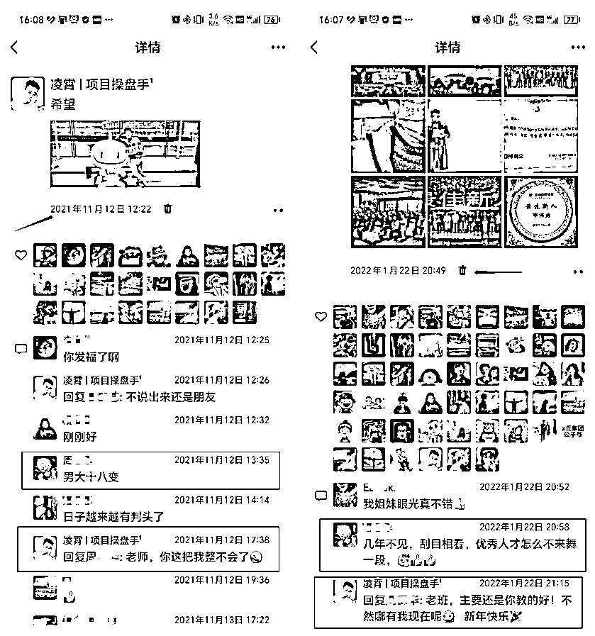

来源：https://jv3ue06ua1.feishu.cn/docx/LdRPdz8qgon825xY8LwcHEk2nph
人生伟业的建立，不在能知，乃在能行。如果你不去试，你永远也不知道结果，所以去试试吧！
—— 凌霄
自从加入社群，一直在潜水学习，感谢社群提供的平台，不仅有各位大佬分享的深度干货和实操性很强的打卡活动，我的2位合伙人也是在社群遇到的 小马哥（5年空军退役）/ 锐锋（3年战支退役）
写这篇文章的时候，心情有些许复杂，回忆之前成长经历和心里历程
感觉这6年何止10倍成长！
既是对自己成长做一个总结，也是作为一份建议，送给哪些打算开启副业、打算自由职业/创业的朋友，希望能让大家少踩点坑
【昵称】：凌霄 【坐标】：苏州
【标签】：项目操盘手/引流运营/私域变现
【一句话介绍】：（项目/IP）引流变现操盘手，擅长把流量变现梳理成sop系统化，提高变现效率
渡鸦科技社（运营总监）5000+人全网最大引流截流圈子之一
前行者团队（主理人）600+人运营圈
我相信是可以的！
这篇文章，我想和你聊一聊，关于我18岁到23岁
这6年来的人生逆袭路
18岁之前：
哪怕是上大学，我一直基本上生活在甘肃省里内，在外界看来，属于是从小拉着架子车，喝“西北风”长大的西北娃
由于从小家庭条件不好，和身边的同学比起来，我天生是有点内向的
成绩差！怎么来形容呢？大概就好比班级最后一篇角落位置肯定有我一个
没办法，这就是又穷、又没有优势所导致的骨子里的自卑。
学生时代的我，不敢说，不敢讲，不敢做任何表达，直到我接触了街舞，曳步舞，才开始从自卑中走出来
ps：（凌霄这个名字既然是我曾用名，也是舞名，一直到现在）
不知道是命运的齿轮开始转动，还是我这条咸鱼开始翻身，陆陆续续开始参加，学校各种节目表演
我之前的班主任也从此对我一改从前，居然让一个“学渣”当学习委员
就包括现在当初高中的班主任一直在关注着我，这是我遇到的第一个贵人

去在甘肃天水上了大学，通过放大优势，大一刚入学就当了班干部，团干部，参加各种活动，节目
逐渐开始，敢讲，敢说，敢表达，敢展示，当街舞社长，当大学生艺术团团长
随着自己精神层面不断的突破舒适圈，长了一点点见识
但社会不是理想状态的，而残酷且真实的竞争环境
手握父母含辛茹苦挣的“生活费”，现实又将我拉了回来，我只是一个刚爬到井口边瞅一眼外面世界的“井底之蛙”
但身体还在井里，这让我不得不去思考，面对毕业后的实习和生活
如果我没见识到外面的时候，我可能随波逐流，但现在我看见了，继续回去井底，我不甘心！
因为看见，所以相信！
那怎么办？2个字！
答案就是：搞钱
于是开始各种小项目的尝试，刚入门我是一个仰望者，被互联网这行各种“割韭菜” ！
其实“割韭菜”现在已经是玩笑了，所有的“割韭菜”，一定是解决了你急需的某个问题，没有人会主动求割
进入了一些“小圈子”
新世界的大门打开了，井底之蛙终于看到了这个世界的真实颜色，进入了发展最快的行业之一
18年上大二时拼多多强势崛起，找我老爸天使投资了1000块钱
就开始第一次“做生意”，跟朋友小汪开了家拼多多网店，卖一款仙鹤款羽绒服
那会没有系统性学习如何运营网店，只是把各种从小圈子里，学到思路技术都杂七杂八的用上
结果，卖爆了！
刚开始定价69元一件 ，纯利赚20块 ；
开始涨价79块-89块；
甚至99块一件；
卖到我们都没有钱来进货（网店有15天的资金冻结期 买家只有确认收货，卖方才能从平台提现到银行卡）
能找的到借钱的朋友都借了 ，甚至都想去网贷！
不过，我忍住了这冲动的想法 ，直接下架了这件爆款，我为什么忍住了？
可能你会觉得，继续卖，能赚的更多哪怕贷款拼一拼，可能暴富就差这一博！
是的，我怂了，我不敢赌！
因为我意识到自己的问题和风险
1.我目前状态无法承担亏损的风险
2.我没有足够的把握接下来继续大卖
3.我没有系统的学习运营
不敢赌啊！我此时输不起！
我们普通人在面对利益时，无法理智分析里面的风险，就会一败涂地
最好的办法不是梭哈，而是不下牌桌！
我相信，赚钱的能力是积累出来的，而不是突然就能赚到钱，只有你积累够了，量变才能产生质变！
就这样，慢慢倒腾出了自己的第一桶金
将这一波赚的钱投资自己，下定决心去找大佬链接，系统性学习运营，学习怎么做事
此刻，我开始摆脱父母，实现独立赚钱
临近毕业，又遇到“疫情”极度迷茫，不知所学专业（工业机器人俗话“机械手”）有怎么样的前景？
在不知所措的情况下，开始投简历给学校对应的企业，所幸的是，因为在大学表现还不错，获得老师推荐
来苏州重点企业，开始实习！
从车间开始干，面对冰冷的机器，调试好程序让它自动跑起来后
就像个稻草人一样，站着那看着麦田，而我看着机器，太难受了，时间长思想脑子真的会麻木
这也是为什么现在很多年轻人宁愿做骑手，不进工厂的原因
不过，这段经历让我悟到了做事情分2种：
要么和机器打交道，研究零件、程序代码等
要么和人打交道，研究人性、营销、运营等
明白这些道理后，我开始为自己争取和人打交道的机会
就在我各处寻找机会的时候，它出现了
上面办公室，刚好缺人，需找一个有点技术，会做表PPT的人，那不正好
当负责人来我们这里问的时候，其他人都默不作声，只有我站了出来
说：我行！
现实的社会从来都是奖励勇敢者的，也只有勇敢者才会享受到机会带来的红利
成功调岗，做起了售后助理，开始和人打起了交道，面对工程师，业务，生管，采购，售后，各个地区，还有越南，印度等国外人员等等
因为对于业务的不熟悉，加身上自带“幼稚”学生气，导致和他们沟通一直处于弱势地位，很难受
可能是我当时的女主管，看出了我的窘迫
真的很有耐心的教我怎么和其他人打交道，帮我梳理业务流程，在我被人怼的时候帮我怼回去
这是我遇到的第二个贵人，在她的帮助，我真的站起来，对于复杂的业务流程，有的业务pm还不如我懂
也因此，在我们这一批近20多学校，3000多名实习生里，崭露头角
正式毕业后直接转正，也是从此刻开始，我不再是带着“幼稚”学生气的实习生，而一个合格职场人
此刻的我，太渴望赚到钱了，全力以赴的工作，更是无偿加了很的班
出差到地区现场（到地区负责现场调度管理），一干就24小时连轴转，一点都感受不到累
更是还有下班了还有精力去夜跑，哈哈~
ps：（不过说回来，这也让我真的锻炼耐力，现在一直在坚持打卡）
负责的项目，也算是乱中有序吧，连续3个多月的出差，也让我有了一点值得骄傲的成绩
11月份出差结束后，突然回到稳定早9晚6的工作时间，甚至还产生了一点点不适应
可能是来自工作压力突然减少，也可能是出差前后的工资对比，让我原本投入在工作上的心，开始躁动
将注意力转移到能赚钱的事情上，我是一个喜欢动手尝试的人！
对赚钱背后的玩法一直存在探索的心态，所以我喜欢每天刷各种平台的广告
按他们的引导，一步步去观察记录他们的引流手段、转化技巧
很多人看一个项目、一条资讯，可能就是看看而已
但是，我看到一个有商机的项目和信息，看到别人在做的事情能赚钱
凌霄我就会手痒痒，就会花时间去动手尝试，去实践
虽然，大多数并不指望靠某个项目赚多少钱，但就是享受执行过程中和测试成功后的那种“小胜利”的感觉
至于，后面要不要放大去做，却是就看自己的精力和心情了
看的多，操作的多，自然就会了
从此我好像找到了，我真正感兴趣的方向
那就：营销
对此，每天我兴奋的事情就是去各种短视频平台去挖掘商机，基本每一周都能发现或者测试出一两个不错的小项目
非常适合个人去兼职操作，也适合有资源的人去推广
所以，凌霄就想找人分享，身边的朋友已经听腻了，他们对于这些不感兴趣
下班后，只想躺在床上刷视频或者打游戏
但是，凌霄认为这些分享，对于一个想在真正靠自己赚钱却找不到路的人来说，是非常有价值的；
无意间了解到公众号，开始进入新媒体行业
开公众号最初的想法也很简单，正因为我普通得不能再普通的开局，一路走来都能拿到一定的结果，
我觉得我可以影响一部分人，让他们不再走我的弯路。
真如，此时此刻，你所看的这个公众号叫做
从不被认可、不被理解、不被任何人看好，到现在埋头写了快300篇文章
关注凌霄比较久的老朋友，应该都知道，我是在2022年1月份开始做的这个号
从0开始入局内容行业，开始进入新媒体内容赛道
主要是因为疫情，回不去家，闲不住，找点事情做
顺便，记录一下自己从什么都不懂，到现在的心路历程，系统性的整理自己会的 ，每天看到的拆解有趣，好玩的赚钱项目
满足一下自己的表达欲，磨炼自己的内功，就这样一边开始学如何做新媒体，如何写文章，一边兢兢业业的工作
就在22年底来了个双喜临门，因为之前出差也做出了点成绩，公司颁发了一块纯银的奖牌
与此同时，很佛系的写自己的凌霄日记，项目拆解，公众号没做什么推广
4天时间直接涨粉1000多
ps：（公众号目前打开率不到10%）
很快就人私信告诉我，通过我的文章学习到了很多，也成功的帮助了好多小伙伴成长并赚到了钱！
自己付费进了很多圈子，接收了很多有效的信息，通过这些圈子链接到了一些大佬
也因为里面的信息，了解了业务的逻辑之后，觉得难度还好，可以尝试下
才让我有机会敢去实操，很多大大小小的项目，所以我深知获取有效信息和圈子的重要性
思来想去，我决定测试做一个变现交流的社群，名字叫【前行者团队】
经过7个月的试运营，2022年7月1日正式对外开放进群申请~
目的：是想聚集一批同频的朋友（互联网项目/内容赛道/电商行业），一起交流变现玩法，探讨更多可能性！
我的付费社群定位很简单：
就是一个听点真话，揭秘一线营销实战，变现交流社群！
只要有一个信息差、一个思路、一个玩法、只要有一条信息对你有用，你就赚到了!
核心目标：带大家学点本领、赚点钱、交些厉害的朋友，聊点开眼的干货
我深知，这一切的背后是大家的信任，我一定不能辜负大家的信任，要把这个社群的价值真正做起来
此时的我，有了属于自己的真正感兴趣的方向，也有了一群350多人认可并且信任凌霄的小伙伴
自己的主副业都取得了一点小成绩，同时磨炼了内功，开始做自己账号
赚钱，本身就是一个需要主动想尽办法克服困难，需要熬过不仅没有反馈，还会有一堆负面情绪的煎熬时刻的事
它需要你有耐心、信心、执行力
到这个阶段，我的收入其实没涨多少，但能力、经验增加了
此刻我开始意识到，目前做的主业工作虽然取得了一点成绩，但是也被困在了原地，无法取得突破
我尝试着回答一下4个问题
1.目前做的工作真想做的吗？
我的回答是：不是
2.目前做的工作可以快速赚到钱吗？
我的回答是：不能
3.目前做的工作替代你的成本大还是小？
我的回答是：很小，并没有核心竞争力
4.你现在最想做的是什么工作？
我的回答是：运营
我清楚的知道自己想要什么，怎么样才能得到，要积累出什么资源，才能实现自己的目标
我清楚得很
我更知道努力的一文不值，而杠杆的力量是无穷的
人生伟业的建立，不在能知，乃在能行。如果你不去试，你永远也不知道结果，所以去试试吧！
这也段话也是凌霄我的人生信条
过完年，刚到公司没半个月就跟我的主管发了辞职邮件，毅然决然的决定转行做去运营
就凭着，自己运营账号引流，转化，社群运营的实操经验，面试到了不错工作
别墅设计装修公司主要是相关面向B端用户的营销，做的都是有钱人生意
ps：（只做200㎡以上的别墅设计和别墅装修）
通过在小红书引流，成交一户，在成都450㎡的大别墅设计+装修
入职3个月不到，直接升职运营主管啦~
这也让我才有机会，去了解、去接触、哪些有钱人，是如何做事，如何说话，都做什么赚钱
真的，当周围环境变了，平时接触的人变了，你也会跟着变
接触的多了，我发现我慢慢的，能像老板一样思考了问题，处理事情
我也有机会操盘过设计师IP，创始人IP，与此同时开始认真做自己的运营IP
好多朋友通过其他人的分享和拆解我的账号，找到我来交流经验，让凌霄我最近交了很多同频的新朋友
在和很多搞钱朋友交流过后，凌霄听到大家对我最多的评价就是：
运营做挺不错的应该赚不少吧......
说实话，赚了不少，我不觉得赚钱是可耻的，相反地，我觉得能赚到钱，是对能力最好的嘉奖
不坑蒙拐骗，不是为非作歹所得，每一笔都是坦荡荡的正道财，没啥遮遮掩掩的
无保留的分享自己运营方法引流技巧，也是对自己的一个复盘
毕竟大家都是实战派，你赚了多少，真与假，盘一下商业模式一推就推出来了
因为能碰到真诚的圈子，实在的交流氛围，几率就跟中彩票的几率似的
所以我自己做社群的原则也是真诚分享为主，有环境氛围，我做了打卡，有教学有督促
成功的将主业和副业联动到一起了，不像之前副业对于自己的主业一点帮助都没有
而现在不仅主副业相辅相成，让我有了爆发式成长，更有幸的是参与到集团公司全网品牌营销活动中去
ps：（坚持夜跑5公里，没白费居然派上用场了，哈哈~）
这一次的活动，既是一次学习品牌营销的机会，也是静下心思考，我的下一步的发展方向的机会
我想要的是不依赖公司，独立赚钱
因为，市场经济环境的原因豪宅地产也受到了影响
我也能在后台看到作品数据，关于别墅设计和别墅装修相关数据下滑的很严重
政策在鼓励，但市场大势已去，这没办法
幸好，之前一直有发展副业，自己的个人商业闭环也搭建起来，积累出自己的生产资料，否则一辈子都只是为他人努力
此时的我不依靠公司，已经可以获得收益
我相信我的人生不止打工一条路！
所以，我决定将自己的定位从单纯的新媒体运营，转向了项目运营
于是我花了3个月时间把社群圈子升级了成社群知识系统
全新升级后的【前行者团队】有5个专栏，为新个体建立互联网生意，打造最小商业个体的闭环
咱们的社群，可能和市面上大多数的付费社群不太一样
用社群网站来沉淀内容，微信端也有小程序，比使用任何app都方便多了，只要有网，就可以直接查看
截至目前已经积累了1万+精准用户，社群会员600+并且被百度、360搜索等引擎收录
这让我更有底气继续下一阶段的人生
2023年开始创业
但既然是我以为我做好准备，离开职场的环境，全靠自己面对不确定性
也让我从离职的是的激动，变成每天的焦虑和内耗
什么也不想干，就看着天花板，瞬间，没有上下班不知道自己要做什么
晚上，该睡觉的时候，又精神的不得了，打开手机看短视频，一看就是凌晨5,6点
这段时间，我疯狂的探索各种可能赚钱的生意，但我也和你们一样，沮丧的发现： 内心非常浮躁，好像知道不少，却没有哪件事能干得很好
其实很多生意，你看上去是能一个月就大赚一笔，其实人家已经积累了很多年
与此同时，收入也掉入到谷底，从1w2-3掉到一个月仅2000块钱，都交不起房租勉强维持温饱
焦虑、自我否定、觉得自己狗都不如、这种心情是几乎每天出现的
远离了职场，基本上也就是远离与别人社交，开始的2-3个月都把自己关在房间里
除了偶尔去吃饭卖菜，基本上就没有在张口和别人说过超10句话
导致心情更差，压力大，也不想运动、暴饮暴食、失眠，就出现了
我：这完了，饮食、运动、睡眠全废恶性循环开始了！....
就这样被低效率的节奏彻底打乱，是一种身心的累！
为什么这么身心累？
其实是：能力匹配不上现阶段的要求
这种状态让我持续的PUA我自己，各种从自己身上找原因，否定自己，都快有点抑郁了
直到刷到程前朋友圈，看到他分享的有一段话：
如果说人生是一场旅程，创业更像是一场远征
因为我那怕就是摆烂躺平了，躺会也还是要重新站起来的
因为我清楚的知道，我要真想做到这件事怎么都能做到，不会因为躺了一会就凉凉了
而在无数个奋斗的夜晚，其实我自己都会问自己，想做吗？值得吗？
如果想，如果值，那就一个字：做
所以说真正能把自己劝好的人，只有自己
不是别人，也别指望别人
我真的听进去了，开始梳理自己的身体状态，业务流程，去社交，去链接大佬
于是，痛定思痛，我开始思考：
那我还缺什么？
缺情绪体力稳定的身体，缺对更多行业的了解，缺对商业的整盘认知。
先从回复身体开始！
我彻底放空自己，放下手机，走出门，去运动，去放风筝，去跑步，去捡起已经丢掉街舞
就这样，我将对自己的不满，全部通过运动发泄了出来，将不满转化为动力
在音乐中感受节奏鼓点
在跑步中感受耳边的风
在早起中感受阳光虫鸣
可能是运动带来的正能量，每次运动完后，都会有对自己身体的掌控感和成就感
不断积累的“小胜利”让我重获自信和能量
自身的能量恢复，让我有了清晰的思路和做事情的动力耐力，但还没有明确的方向，业务
是时候走出去了
去学习，去链接，去用脚步丈量自己的世界
通过学习和链接，确实获得新的机会和思考，让我重新开始规划自己的产品和服务
创业，一定要多条腿走路，不能只去做一个项目，一定要做多个项目
也就是我现在经常说的1+N模式
在新的领域里，掌握关键方法和关键决策的人，才有资格吃到红利
所以，我决定将自己的定位从项目运营，转向了项目操盘手
ToC: 打造最小商业个体的变现闭环
继续完善社群服务，发展合伙人模式，做大社群，新增AI项目打卡训练营，小红书电商训练营，
入局AI，让AI辅助我们普通人开始做项目，自己做了AI国内镜像站，AI导航站

ToB: IP 时代商家营销方法论
通过为本地商家通过矩阵引流营销，让自己快速的在苏州市场扎根
商家矩阵引流营销咨询：500/小时
商家矩阵引流营销代运营：3000/月
商家矩阵引流营销全案操盘：8.8万/年
自此，我的业务彻底开始跑起来，两条腿走路，虽然进展的过程中，还是有问题发生，但也在跌跌撞撞都往前走
我现在从学生→实习→工作→转行→自由职业→创业，这一路走下来，对自己要求都不低
因为当你发自内心的想做好一件事，你会竭尽全力的苛责，视同你对待自己的生命
打工：是一个不断向老板证明自己价值的过程
创业：是一个不断向社会或者市场，证明自己价值的过程
你一旦开始创业摆在你面前的就是所有的问题
你是无处可逃！
我在做一年的过程中我就体会到，它是一件非常刺激，大胆，极具挑战性的事
过程中吃的这个苦和累，是普通上班的3~4倍，但是同样你又有一个概率，可挣到很多钱
吃了苦，受了累，但是没挣到钱的这个阶段，每天晚上1-2点躺在床上，看着天花板，就问自己说我在这弄啥呢？
算个账，背井离乡，钱也没赚多少，还比上班累那我怎么解释我现在这个行为
但是即使重新来一遍，我还是坚持要做
性格就这样的性格，不甘为人下，这辈子就得自己做摊子事，不然感觉看自己这辈子没来过
图个啥呢？
做自己，做真实的自己，并且相信相信的力量
改命靠的是自己，靠的是想法推动行动
很少有人是真的天赋异禀，天生就啥都会，啥都精的
谁曾经不是个新手？
大家都是从笨拙到熟练，再到精通的
所以，不要因为自己的现状和别人差距太大而沮丧
不好的，只是现在的你
现在的你，是过去的你的结果，未来的你是什么样，则取决于你现在开始，要怎么做
那要怎么办呢？
答案也很简单——下场干
实践，会和照妖镜一样，反映出你当下的好与坏
发现了自己的优点，就努力把优点发扬光大
发现了自己的不足，就想办法补齐不足，或者找到合作方来弥补不足
我这6年，就是这样的过程
边做边学，做多了，能力也就跟着越来越强，心力也就跟着越来越强
整个过程虽然缓慢，但总是坚定的往前的
嗯，缓慢而坚定
所以，我感谢过去6年18岁-23岁的自己
踏出了第一步，让我从自卑变的自信
踏出了第二步，让我从井底看到世界
踏出了第三步，让我用脚步丈量南北
踏出了第四步，让我领悟做事的规则
踏出了第五步，让我从打工跨越创业
踏出了第六步，让我从谷底自救生根
……
我也是在实践中，慢慢摸索出属于自己的一条道路，摸索出属于自己的动力源的
如果说你也想改变，那无论是为成为更好的自己，找到属于你的成功之路
就此刻停止空想，人生路不是设计出来的，而是在实践中探索出来的
所以，请不要把注意力放在自己和他人的差距上
如果你不知道自己能做什么，可以做什么，或者有哪些可以做，还在一个人自己瞎摸索？
那可以和凌霄在【前行者团队】与几百位同频者交流，能为你提供一些信息和参考
任何生意，最重要的是你得在牌桌上，看懂牌桌上的形势
抓紧下场，以探索前行为目的去实践
在探索更好的自我的道路上，缓慢而坚定的前行
这就是凌霄我跌跌撞撞的6年时间
与你共勉！
用《超兽武装》里冥王的一句台词收尾吧：
自从厌倦于追寻，我已学会一觅即中；自从一股逆风袭来，我已能抗御八面来风，驾舟而行!
下个6年正在进行中.........
迟来的24年计划，看到大家跨年的时候都在写年终总结和计划，凌霄我却是不为所动
脑子昏昏沉沉的，没有下一年的完整规划（不幸中招得了甲流，今天1月5号都还没有好利索~）
同样的时间节点，去年22年12月阳了，23年1月刚好，今年23年12月得了甲流，24年1月刚恢复
历史总是惊人的相似！
虽然脑袋里还没有完整的24年计划，但先通过一篇文章，做点粗糙的梳理，倒也不坏
将自己的赚钱结构会从“公司+员工”
变成“平台+个人”
只工作不上班，自由职业了一年，完成了最小商业个体，22年底决定放弃月入过万，运营主管小中层工作（上市公司）裸辞开启自由职业
刚开始前2个月迷茫焦虑，因为没有上下班的约束，没有确定性的收益，没有社交
更是怀疑自己能力，差点交不起房租！
所幸的是，我女朋友义无反顾的支持我，相信我的能力，更相信她的选择的人不会差！
问我了一句：假设你30岁了还想去闯一下吗？
凌霄说：想呀！
我女朋友说：既然30岁的时候都想出来闯，那和现在有什么区别呢？
现在闯，哪怕就是撞了南墙，你一人吃饱全家不饿，大不了找个工作，不说月薪过万，5-6千的不是随随便便找吗？
你想30岁在离开职场，你要背负的压力只会比现在大的多
更何况，你有我呀！
凌霄：确实，我好养活，一包榨菜两个馒头就是一天哈哈~
因为自从22年底辞职到如今没上过一天班，每天说都是撒时候睁眼，撒时候起床
设置过闹钟也想过早起，但我的闹钟叫不起我，反而是把我对象吵醒
不用上班，不用早起赶地铁，无拘无束，更没有老板pua，刚开始的几个月确实苦
但如今，赚的比上班多，面对势能比自己强的大佬起码有的聊
可以说这是每个做自由职业或者创业的人都有这种优越感
也正因为有这么多好处，才让一批又一批的人，向往创业/自由职业
再加上这几年，一部手机，一个账号，一个人就是一家公司的超级个体的概念深入人心
从而养活整个知识付费行业，与我而言，也吃到一杯羹！
凡事都有利有弊
承担了自由的好处，就要吃下自由的“苦”。
啥“苦”？
不断试错、承担风险、独自面对不确定性、自主学习、反思总结、自律、改变思维、努力奋斗，提升认知等
凌霄我在当打工人的那个阶段熬过，知道这些品质对于上班来说是陌生的，是抗拒的，更是虐待自己的
至于现在都创业一年多了，依然把自己的目光锁定打工人的阶段
老是和之前的阶段对比
还记得第一次做到日入过千，自己那洋洋得意的样子，骑着小电驴，看着旁边的同行的路人，谁都瞧不起
心里想着，他们这一天十来个小时，挣2/300块钱，累不累呀！
路过之前实习工作的公司门口，中午吃完饭蹲在马路牙子上抽烟的熟人，就想过去吹吹牛逼
炫耀一下，自己现在不上班，挣的比你们多
心里就想对说教一番，你们为什么不努力巴拉巴拉
不怕你们笑话，我还专门写过，写的时候切入点是想让他们提升自己
实际我心里知道啊，就是优越感作祟
现在看之前的自己种种行为，就是小人得志的丑恶嘴脸，呸！自己真不当成人
这种心态持续一直到这两天，忽然感觉总是对标自己打工人的阶段
真™没什么意思，之前没在意，还是按照自己打工人的心态做事
直到这两天看到老侯的一篇文章，说的就是他的之前的对标心态
真的是写的太戳我心了，这几天我的心态刚好在转变，他就给我来了一顿猛药
自从我辞职做自由职业，再到创业，自己见到的人，打交道的人，都是有结果有能力的大哥
要么人家公司上百号人，要么是自己的10来人的团队一年干百万甚至千万
哪怕是单兵作战的大佬，也都是月入几万到十几万不等
凌霄我这刚刚起步，在他们面前压根排不上号
而且
我以操盘手自居，觉得自己很年轻，不算牛逼但也有点真东西吧！
然而
这些大佬的眼界，认知，拿到的结果起码甩我好几条街！
尤其是
最近正在做新的项目，搞实战训练营，遇到了点问题
就想着去咨询人家一下，给我指点指点
ps：永远不要想着白嫖别人的时间，我现在咨询别人都是188红包开头，如果收获巨大，还会在结束的时候继续发个红包，或者直接转账
大佬真不差你那点钱，但人家愿不愿意说，取决于你的态度，你这个值不值占用他的时间精力
抱着试一试的想法和他们聊天，说到项目，虽然人家没做人家总能跟你聊到很细节的点上
以及可能会遇到的问题，这些问题该怎么解决，每个解决方法的利弊如何
而且还会用你面前阶段能听懂的话给你举具体的例子
我这真的是受宠若惊！
无论在勤奋，努力，赚钱，认知，学习，为人上统统超过咱，第一次感受到暴击
11月份，自己在修理电动车的时候，边修理边思考昨天付费咨询的，大佬给我的建议思路和方法
看着零零散散的零件，就好比自己会的一个又一个的技能，自己已经亲自动手将这些零件（技能）组装到电动车上了，让它可以在正常的路上跑
打工的时候就像骑自行车一样，想要快点到想去的地方，就要卖力的蹬，比的就是自己的体力
那我现在已经骑着电动车了，只要看好方向，电池充满电，一拧车把，跑起来本身就比骑自行车的人快的多
但心态上
还老跟之前骑自行车的阶段的自己比
这该死的优越感，属于是人性本质了，有了这个念头感觉思维一下子打开了
我的对标目标该换了，不能再对标上班族了而是对标有结果创业者（那些开着车的人）
我主观意识在做创业者做的事，而潜意识还有打工思维
比如
做事情的时候，一直是猛干3/4天甚至一个月，然后就休息实则是摆烂，不想干活老想给自己放假；
经常找不如自己的对比；
心里还是会不承认人家有结果的人优秀，觉得他只是才中了风口而已
也会去刷各种无脑的短视频，找乐子，占据我宝贵的注意力和心力
再比如
我想做某个项目，心里对于不确定性的抗拒和对于未知的恐惧，导致我要思考好久才敢去尝试第一步
但实际做的过程中发现，之前想的大多数都是没有前提的假想，没有任何作用
还不如找有结果的人咨询来的快
更应该让自己在做的过程中解决具体遇到问题
怎么解决？，遇到困难如何突破？，如何学习如何成长？如何链接人脉？
这些都是有前人积累方法论和具体的动作，但自己心里总是想自己独创属于自己方法，实则闭门造车
普通人创业要做的就是
99.99%空杯复制+0.01%的优化创新！
卧槽，写到这，我潜意识就有点改变了！
啊~~
明白了
我现在此刻这才算从主观意识，心态彻底步入创业者世界了
ps：写作，真踏马神奇，把从前的自己彻底格式化，然后学习新的思维理论认知，这样慢慢改变的
今修个电动车，给我心态修好了，潜意识的对标一换思路清晰了好多
我要做的就是：
99.99%空杯复制+0.01%的优化创新！
又回想到之前看过的大佬的分享的案例
他路过一家五金店的时候，正好开门，门口摆着刚拿出来的油漆桶，铁链等东西，巧的是隔壁店铺也是做五金的，门槛摆的东西跟隔壁一模一样
潜意识的对标一换思路清晰了好多

为了好区分，用A和B来代表吧，A做的好，B是模仿者
A从店里拿齿轮放到门口，B也从店里拿齿轮放到门口
A从店里拿吊绳放门口，B也跟着拿吊绳放门口
开门时间一样，拿东西时间也一样，卖的东西也一样
A五金店老板经常坐在门口守着，有人来就招呼
B五金店老板也学着坐在门口守着，有人来照样招呼
除了门牌不同，其他都一比一复制
桶、人、吊绳、产品布局等好多细节，是不是都一样？
B就在复制路上一直走一直走，以前就知道B模仿A，但没什么感觉
修个电动车给我修的潜意识心态都转变了，瞬间就明白空杯复制的意义
1、知道同行挣多少钱
2、知道同行盈利模型
3、知道同行话术
......
不需要自己创新，把同行最好的东西拿过来，你就是很厉害的存在
A五金店他做了且挣钱，这叫被现实论证过来的
人家已经做成了，不用你觉得的这事怎么这么傻
他只要成了，他就是牛逼的
凌霄我啊
就在这世界中，找跟我做同样事情的人有结果的人，空杯的去复制，学习后融会贯通再继续
就像上面这段话，我明知道要把同行的东西拿过来是最直接的
但潜意识还是要自己做一套一模一样的，总觉得复制别人可耻
就像今天，我为啥要暴露自己缺点，为什么要复盘自己！
就是为了研究人性啊！
因为人被潜意识不知不觉就引导了，我们如果了解人性够多，就知道客户怎么想，就知道消费者怎么想，那挣钱是不是就轻松了
顺便迭代自己的认知，思路，心态，简单整理目前已理解的人性！
恨人有，笑人无
喜欢当面一套背后一套，破解方法很简单，看他做的是啥，而不是他说的是啥
人会沿用曾经成功\失败经验前进
宁愿辛苦工作也不愿动脑学习思考
做事，是选择自己擅长的事，靠信息差和能力赚钱
做事业，是一切以把事做成为第一目标，碰到不擅长的领域，也会去克服，碰到自己的盲区，也会去挑战，不断挑战自己的局限性，去获得时间的礼物，而不是能力优势。
大部分的成功，持续性的成功，都是时间的馈赠
每当经验值够了，就会出现相应的人或者事来承接这个阶段的故事，满足条件升级进入下阶段，不满足继续磨炼
修的不只是电动车，修的是心！
以前潜意识对标打工人年入一二十，如今对标创业者年入百万
走过去了豁然开朗，走不过去原地打转
人生就是连续翻越，翻越啥啊？
翻越曾经的自己呗！
凌霄：
是高度的敏感，是原生家庭造成的自卑？
是不够耀眼的成绩，是不美丽的外表？
是不够突出的能力，是没来由的焦虑？
是一次次的失败，是整夜的失眠？
是努力和收获不成正比，是总等不到对的人？
是空空的钱包，是糟糕的性格？
是总忘不掉的回忆，是他人的偏见，是自己的不甘，是对未来的迷茫？
是不知所措的年纪，是一遍遍的自我安慰和颓废，是日复一日清醒又荒唐的活着？
还是......
你要去静下心来好好思考，你就会发觉，你没有被困住
你以为你被困住，实际上，你没有被困住
有个段子：
青年人问方丈：“求大师帮我解脱。”
方丈说：“谁在捆绑你？”
青年人说：“没有谁。”
方丈说：“那你求什么解脱？”
明白自己本来就是自由的！
反而“忙”与一些“无意义，无效”的事情，让自己一直被困住，困在原地！
过于急功近利，总是幻想自己可以找到一个快速赚钱的秘诀
结果却适得其反，不仅自己没能实现一夜暴富的美梦，还被骗了个精光，浪费自己大把时间在无意义的事情和内耗上
不去解决真问题，忙于“假装努力”
用一句话来提醒“假装努力”的自己：
所以，困住自己赚钱的到底是什么？
去静下心深度思考一下，你不必总是苦恼于赚钱本身
反而“忙”与一些“无意义，无效”的事情，让自己一直被困住，困在原地！
过于急功近利，总是幻想自己可以找到一个快速赚钱的秘诀
结果却适得其反，不仅自己没能实现一夜暴富的美梦，还被骗了个精光，浪费自己大把时间在无意义的事情和内耗上
不去解决真问题，忙于“假装努力”
赚钱的奥秘不是围绕着“钱”思考问题，而是紧盯问题本身并提供“真实有效”解决方案，并且付出“真行动”
不要自己觉得值钱就值钱，而是让别人觉得值钱才是值钱
不必总是费尽脑汁地琢磨要赚多少钱
你应该好好想想自己要做什么事，才可以给他人、给社会创造更多价值
当你想明白了，也就会付出真行动
记住！用一句来提醒“假装努力”的自己：
所以，困住自己赚钱的到底是什么？
你有没有观察过，自己每天做的事，有多少是自己真正喜欢做的？
从起床，到晚上睡觉，这一天内，吃饭、上班、创业搞钱还是与人交谈、娱乐活动，有哪些是出于发自内心的我喜欢、我想要，又有哪些是觉得我应该做的？
我应该，是被外力影响，自己不得不做的事
是在别人的眼光下，做别人认为对的事情，久而久之，自己也觉得那样可能是对的，毕竟能获得别人的认同
但当夜深人静时，回想自己，又总有种遗憾和心累疲惫感，怀疑自己每天做的事的意义，不甘心自己一生就这样过
好像生活与自己之间总有段距离，不安心
第二天起床，似乎又把夜晚的思绪遗忘了，继续前一天的生活
我喜欢，是发自内心的想要做一件事，可能只是想用心给自己做一顿饭，或者去公园散散步，哪怕是创业搞钱，一切都是因为【我想做】
做【我想做】的事情时，会感受到真正的喜悦，享受做事的过程，浑身顺畅、轻松带着成就感
我应该做，的事情，总是需要努力去做
我喜欢做，的事情，都是毫不费力就完成的
坦白来说，凌霄我最近有点拧巴！深夜带着焦虑和内耗入梦
焦虑内耗原因，在于我清楚的知道，自己正在突破往常随心的单兵作战的自己，而走向思考团队化，尝试公司化的可能
这条路，让我不断去逼自己去学各种合伙创业的方法和思路，什么股权结构等，在几个月，我都没有想过，我会去学这些
以及如何去照顾别人的情绪，让大家有一个积极向上的情绪氛围来一起做事，一起生活，一起搞钱
这些是【我应该做】的事情，也是不得不做的事情，在这个过程中对我来说是陌生的
是需要不断试错的，更是需要别人的反馈来纠正自己做事的过程
这其实对于彼此都是一场修行
就如同
冬天黑夜里行走在寒风冻手而又四下无人街头，站在十字路口，要选择到底走那个方向
但决定，如何走的时候，不再是自己一个人分析利害关系，选择自己适合的那条道，不是迎合某一个人全部想法和思路，状态
而是大家要把所有利害关系具体问题拿出来摆在桌面上商量，才能从中选择出一个适合大家的最优解
这个过程是极度内耗和焦虑，毕竟冷暖自知！
当问题没有被摆在桌面时，对方是完全不知道的，我们赚钱老讲【用户思维】
但此刻大家无法做到，而是需要和自己人性去对抗
人性是自私的
只是想选择性的看到自己想要，而忽略其他人的感受和真正想要的
大家相聚于此一起做事，是自我带着【我喜欢做】来的，但在做的过程中，变成按照本我【我应该做】开始行事
这可能是合伙创业最本质的“真相”
尽管这可能有些抽象和困难，但它确实决定了个人底层的人生观和动力来源
这个过程中，产生内耗和焦虑更多的需要自己用一套“自洽”的人生观去消化排解
在过去的几年中，我的人生观可以用以下两句话来概括：
1，人生并非一帆风顺，但注定拥有自我拯救和实现自由的可能性，重要的是去试试看而不是空想
2，人是社会性动物，需要入世磨练沾染世间色，看大千世界，行万里河山，品万家烟火，见人见事见自己
这是凌霄我积极自洽的人生观，也我用来排解内耗的基石
内耗的本质：我们内心的世界和外在世界发生了冲突，但是我们又没有整合能力
否则，一个人总是沉浸在外在世界和内在的世界冲突中，将无法心安自洽！
更别提赚钱了，内耗会导致你大量的时间，浪费在自我内心挣扎中，而无法行动上
赚钱靠的是具体的行动，而不是空泛是想法
但内耗也并不可怕！
在过程中很难受！
但如果，你有使用自己内心世界和外在世界整合的能力（让自己“自洽”的能力）
这对你来说可能是一件好事！
因为每当我极度内耗时，过程越痛苦，我越能很清楚的感受，我的内心世界又壮大了
然而，一个人不能总是沉浸在宏观层面，否则你可能会过于虚无缥缈
除了宏观层面，最好还要在微观层面上有一个具体而详细的着力点
用一句来提醒内耗的自己：
凡事发生必将有利于自己，我来体验专属于我的感受
微观层面的不断深入将带来个人的踏实感，会促使自己开始行动
否则内耗负面的情绪影响你赚钱的速度！
赚钱，就不能有太多的负面情绪和内耗
情绪稳定，是非常重要的能力
强大的内心，可“自洽”的人生观意味着对自己的认识和世界的坚定认知是从自身中生长出来的，不再轻易受到外界的影响
一个人整天想东想西被内耗着，就是不行动，心力，注意力，精力被糟糕的情绪消耗完了，拿什么去赚钱呢？
说到底，我们最大的可贵是对自身不断地进步与提升
任何时候，我们都有不好的一面，但这些绝不是内耗自己的借口
站在当下的时间去回看23年，裸辞做自由职业，只工作不上班，真的是一件非常刺激，大胆，极具挑战性的事
更是敢对父母坦白自己现在裸辞不上班，依然可以过的好自己的生活
那个从小喝“西北风”穷小子真的长大了！
从能力上，赚钱上，身体上，心态上，潜意识里都完成了蜕变
我目前想到最想做好的几件事
1、事业赚钱（即下图的“赚钱系统）
2、个人提升（即下图的创造力）
3、体验
做到年营收百万级净利润
toc：个人IP主要产品包括卖社群399、卖项目/技术根据具体项目确定，卖操盘手训练3980、卖一对一私教服务38888
tob：企业咨询/内训500/小时，企业代运营5000/月，企业全案操盘15.8w/一年
今年决定学习新的技术或者新的内容能力（编程、RPA、AI、讲课、演讲、直播、口播、长视频...）从效率层面入手
或许写一本书，也说不定呢！
对我来说，这个目标还是一种自我暗示：技多不压身，关键就是每天积累一点，坚持一年，绝对会超乎想象
真如我英语从小到大都勉强“抄”到及格，没想到22年会搭建网站，23年编程写黑科技脚本，哈哈~
23年5公里跑到202天，天气冷了就没在跑了，等温度上来点，继续战5公里，24年跑到最低410天
重新捡起街舞，感受音乐的鼓点，然后在培养一个新运动习惯，比如骑行（山地车都看好了，就等春天呢，哈哈~）从而提升心力，耐力，体力
这类目标可以给自己生存和健康兜底，让以后的路更好走，有更大的选择权，不至于赚钱为了进医院
赚钱系统+个人提升——这两类目标推进了，就有更大的能力去体验更多东西
钱是一种资源，赚钱能力是为了更好的使用资源
体验到很多之前没有能力体验的东西，包括买自己想买的东西，吃没吃过的东西，去没去过的地方，见自己没见过的人，尝试边旅行边工作
得到周围人的尊重和认同，让自己更有安全感成就感，等等
但有些东西不是你有钱你就能体验到的
比如陪伴家人，健康的身体，某天下午喝杯茶看本书
核心框架中，“创造力”和“赚钱系统”两个支撑点之上，才是“体验”
最后总结一下，按照这套框架去设定24年目标的一些好处：
1、有东西为生活和健康兜底，不至于一年之后还是原地踏步，能让往后的路障碍更少，选择的空间更大
2、能少很多无效思考和无效行动，减少浪费，少走弯路，让自己在具体的行动中，而不是空想
3、能降低失败的风险，即使失败，也不会伤及根本
……
感谢600多位前友一路陪伴，一路前行！
ps：我家“富婆”陪我写文章，都瞌睡的不行了~
与你共勉！